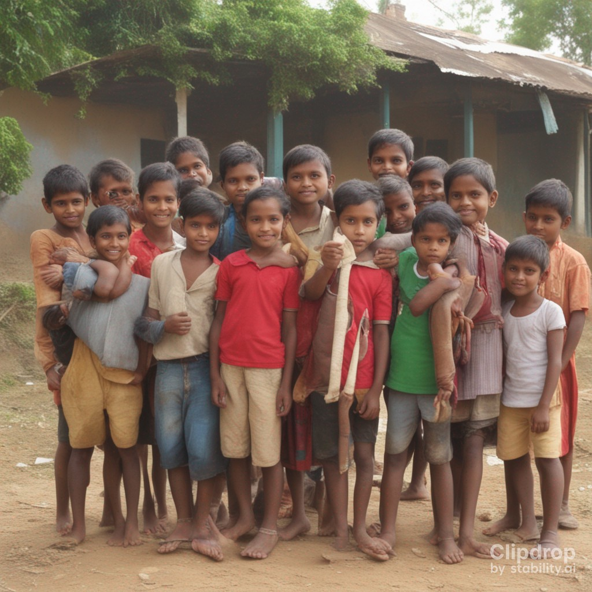
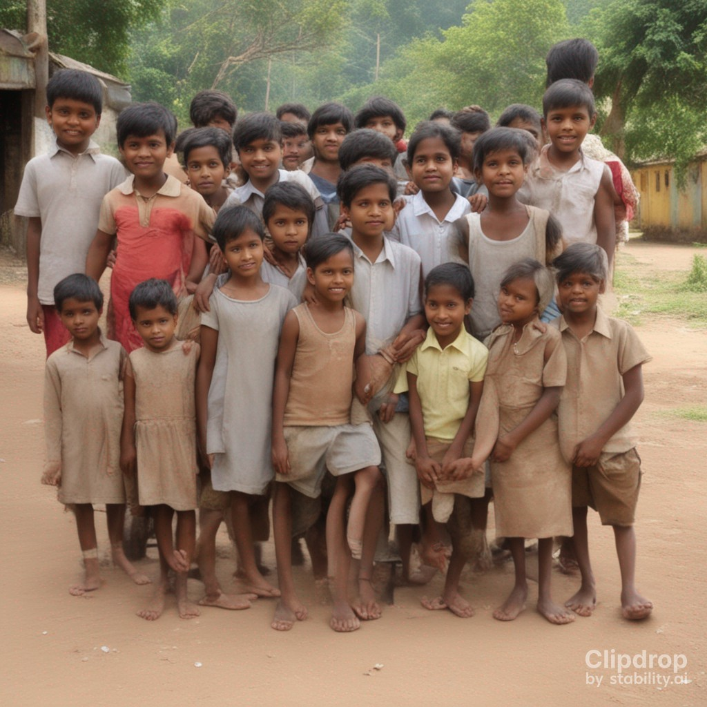
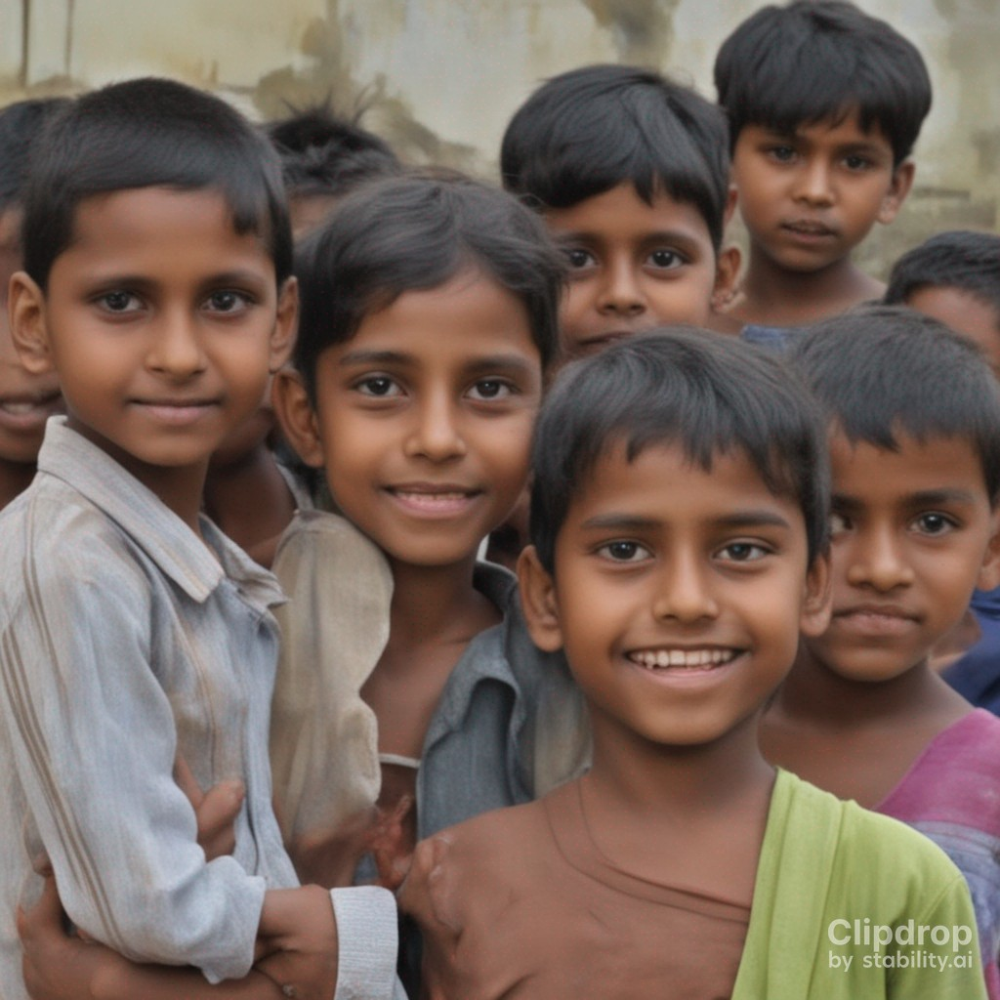
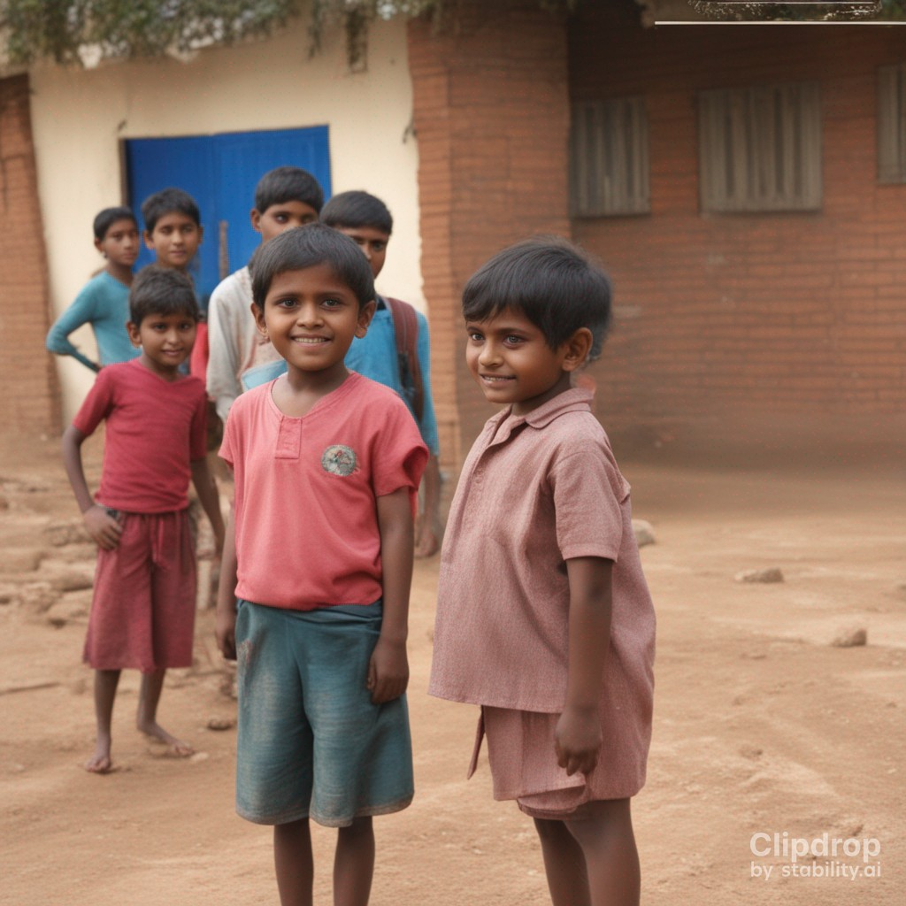

ORPHANAGES ARE THE ONLY PLACES THAT HAVE LEFT THE FEEING OF BOTH EMPTY AND FULL....




VISION
All children without supportive families in India will have
their basic needs to met. Food is scare at the orphanage these days. So our main focus is to give them three meals a day.
And also to ensure that they have proper education, clothes, health care and security for those children.
Children in orphanage deserves to have a loving childhood and to be treated with dignity and care.
MISSION
The mission of THE GODSPACE is to enhance the lives of the orphans in all possible ways.
The main focus is to provide then protection and security. The orphans don't want to face any difficulties in getting their basic needs.
Our aim is to understand that the children living in orphanages should taught that they are no more
lesser than children growing up at home. Ensure every needy child is reached and has
access to all their basic needs including education, shelter, love, care and happy livings.
OBJECTIVES
1. Come up with three meals a day. 2. A clean and hygienic habitat should be created for the children living in the orphanage
3. Orphans should be provided with essential needs. 4. The medical and educational needs of the orphans should be met.
5. Orphans should be introduced into this world as well-behaved,competent students and disciplined.